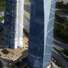

<!DOCTYPE html>
<html lang="en">
<head>
    <title>安防星全景界面</title>
    <meta charset="UTF-8" name="viewport" content="width=device-width, user-scalable=no, minimum-scale=1.0, maximum-scale=1.0">
    <link rel="SHORTCUT ICON" href="../res/img/webIcon.png"/>
    <link rel="stylesheet" type="text/css" href="../css/view.css"/>
    <link rel="stylesheet" type="text/css" href="../css/jquery.mCustomScrollbar.min.css">
</head>
<body>

<div id="mainDiv" style="height: 100%;">

    
    
    
    
    
    
    
    

    <!--编辑文字用的canvas-->
    <input type="text" id="tempInput" class="inputCanvas" autofocus="autofocus" width="auto"/>

    <div id="showDiv" >
        
        
    </div>
    <div id="editDiv" style="display: none">
        <div id="spanDiv" class="spanClass">
            
            <div id="picker-wrapper" style="display: none">
                <div id="picker"></div>
                <div id="picker-indicator"></div>
            </div>
            <div id="slider-wrapper">
                <div id="slider"></div>
                <div id="slider-indicator"></div>
            </div>
            
            
            
            
            
            
        </div>
    </div>
    <div id="measureDiv" style="display: none">
        
        
        
        
    </div>
    <div id="selectDiv" class="scrollBar">
        <!--<div style="background-image: url()" class="listDetailDiv" onclick="selectDivClick()"><span class="timeSpan">time</span></div>-->
        <!---->
    </div>

    <!-- 悬浮的显示div -->
    <!--<div id="emmm" class="arrow_box">-->
        <!--<span>这里放置美国大力龙泡沫车</span>-->
        <!--<span></span>-->
    <!--</div>-->

    <!--拦截点击事件图层-->
    <!--<div id="listenerDiv" style="position:absolute;width: 100%;height: 100%;resize: both;z-index:7;top: 0px;right: 0px;left: 0px;bottom: 0px;"></div>-->
    <!--全景图层-->
    <div id="container" style="width:100%;height:100%;z-index: 5;position: absolute;top: 0px;right: 0px;left: 0px;bottom: 0px;"></div>
    <!--高德图层-->
    <div id="mapContainer" style="width:100%; height:100%;resize:both;z-index: 6;display: none;opacity: 0.7;pointer-events: none;"></div>
    <!--测量图层-->
    <!--<canvas id="measureCanvas" style="width:100%; height:100%;resize:both;z-index: 7;display: none;pointer-events: none;"></canvas>-->

</div>

<script src="../lib/jquery-3.2.1.min.js"></script>
<script src="../lib/colorpicker.min.js"></script>
<script src="../lib/three.js"></script>
<script src="../lib/jquery.mCustomScrollbar.min.js"></script>
<script language="javascript" src="//webapi.amap.com/maps?v=1.4.3&key=895fa0f333a8d4f54f40f2e7f832027d&plugin=AMap.ControlBar"></script>

<script type="text/javascript" src="../js/utils.js"></script>
<script type="text/javascript" src="../js/panorama.js"></script>
<script type="text/javascript" src="../js/view.js"></script>
</body>
</html>